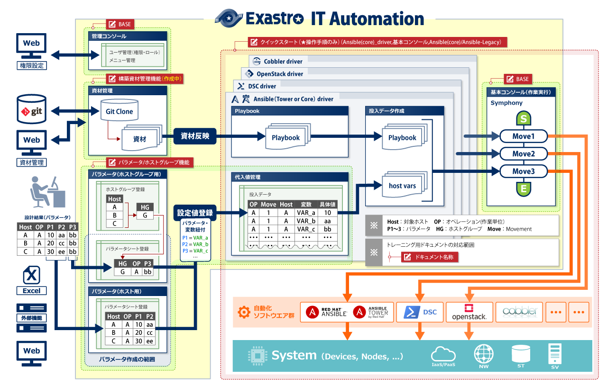
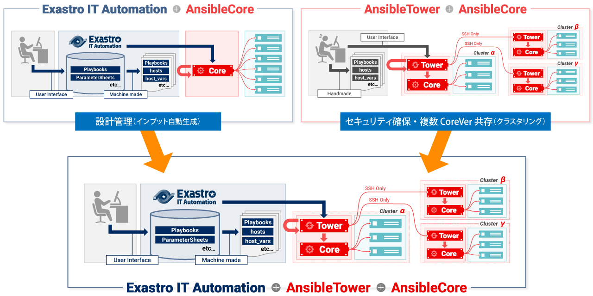

Exastro IT Automation を導入しよう
IT Automationのインストール方法から基本的な画面の説明を行います。下記からオンラインインストール、オフラインインストール、マニュアルインストールの3つの中から環境に合った方法で導入してください。
Exastro IT Automation オンラインインストール

お手持ちの環境に IT Automationをすぐにインストールするためのインストールマニュアルです。
RedHat系Linuxディストリビューションに対応しており、インターネットに接続できる必要があります。
インストール完了後、下記の IT Automationクイックスタートを始めれば、すぐに IT Automationの魅力的なインターフェースを体験いただくことが可能です。
Exastro IT Automation オフラインインストール
お手持ちの環境によっては、外部との通信を制限されている場合がございます。
このような環境下の場合でも IT Automationをご利用いただけるよう、オフラインインストール手順をご紹介いたします。
Exastro IT Automation マニュアルインストール

IT Automationでは、オンラインまたはオフラインのインストール手順を進めると、同一サーバ上に IT Automationの全機能がオールインワンで配置されます。
しかしながら IT Automationは、Web機能/AP機能を有しており、それぞれの機能を冗長配置することでHA構成を組むことが可能です。
マニュアルインストールでは、HA構成の手順をご紹介予定です。
Exastro IT Automation を理解しよう
Exastro IT Automationのシステム構成（全体図）

管理コンソール機能
管理コンソールでは、ITA を利用するユーザー制御（登録／更新／削除）、操作メニューの権限制御（登録／更新／削除）を行います。ITAが管理する各種データのインポート／エクスポートを行います。
構築資材管理機能
自動化ソフトウェア（OSS）で利用するためのInfrastructure as Code（IaC）を管理します。
バックエンドではGitと連携しながら、フロントエンドには払出/払戻のステータス管理を提供します。
基本コンソール機能
基本コンソールでは、ITA を利用して作業する時に共通的に必要となる機能を提供します。
・ 機器情報（デバイスリスト）の登録、管理
・ Symphony（ワークフロー）の作成、管理、実行
各自動化ソフトウエアに対応したドライバー群
ITAは複数の自動化ソフトウェアに対応しています。
自動化ソフトウェアごとにIaC（Playbook等）を制御するインタフェースを提供します。
自動化ソフトウェアの動作はMovement（単位ワーク）に閉じ込めることができ、Symphony（ワークフロー）として連結させることが可能です。
パラメータ／ホストグループ機能
システム構成（ホストごと、またはホストグループごとのパラメータ）を一元管理／履歴管理する機能を提供します。
管理対象のパラメータは自由に定義することが可能です。
パラメータ値はIaC（Playbook等）の変数に紐付けることが可能です。
Exastro IT Automation を触ってみよう
Exastro IT Automation クイックスタート
IT Automationのインタフェースをスムーズに体感頂くために、クイックスタートをご用意しました。
IT Automationではいくつかの自動化ソフトウェアと連携が可能ですが、それらの中で適用範囲が広いANSIBLEとの連携を体感頂けます。
また IT Automationは「パラメータ管理」および「変数紐付け」といった最重要な機能を提供していますが、クイックスタートではスムーズに体感頂くために、敢えてこれらの機能の活用を割愛しています。
Exastro IT Automation BASE
IT Automationの基本機能の利用手順をご用意しました。
本書は、ポイントを絞り込んだ「座学編」、簡単にハンズオンしたい方のための「実習編」の２部構成となっております。
機能ごとの特長を分かりやすく解説し、イメージしづらい概念的な内容は図解している為、効率よく IT Automationの共通機能を理解することが可能です。
Exastro IT Automation ホストグループ管理・パラメータシート作成
IT Automationの基本機能「ホストグループ管理」と「パラメータシート作成」の利用手順をご用意しました。
「ホストグループ管理」は大規模システムの管理に必須の機能です。
「パラメータシート作成」は効果的なIaC運用には欠かせないもので、Exastroの中核的な機能でもあります。
本書は、概要説明と機能紹介の「座学編」、簡単にハンズオンしたい方のための「実習編」の２部構成となっております。
（実習編は後日公開予定）
Exastro IT Automation 実習編
Exastro IT Automation Ansibleとの連携
Ansibleとの連携機能のハンズオンについては後日公開予定です。
Exastro IT Automation 座学編
Exastro IT Automation 実習編
AnsibleTowerとの連携に期待する効果

IT Automationは設定データを蓄積/管理し、Ansibleが実行するために必要なディレクトリ/コンフィグファイルを生成します。
AnsibleTowerはクラスタ間通信をセキュアに、そして異なるバージョンのAnsibleEngineをコントロールします。
AnsibleEngineはansible playbookを実行するエンジンです。
それぞれの特徴を組み合わせた、IT Automation + AnsibleTower + AnsibleEngine で構成された自動構築システムで作業の効率化・省力化が実現できます。